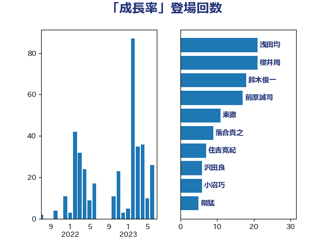

単語「成長率」

| 浅田均 | 日本維新の会 | 21 回 |
| 櫻井周 | 立憲民主党 | 21 回 |
| 鈴木俊一 | 自由民主党 | 18 回 |
| 前原誠司 | 国民民主党 | 17 回 |
| 東徹 | 日本維新の会 | 11 回 |
| 落合貴之 | 立憲民主党 | 9 回 |
| 住吉寛紀 | 日本維新の会 | 7 回 |
| 沢田良 | 日本維新の会 | 6 回 |
| 小沼巧 | 立憲民主党 | 6 回 |
| 階猛 | 立憲民主党 | 5 回 |
| 牧山ひろえ | 立憲民主党 | 5 回 |
| 若林健太 | 自由民主党 | 4 回 |
| 米山隆一 | 立憲民主党 | 4 回 |
| 岸田文雄 | 自由民主党 | 4 回 |
| 古川俊治 | 自由民主党 | 4 回 |
| 金村龍那 | 日本維新の会 | 3 回 |
| 道下大樹 | 立憲民主党 | 3 回 |
| 藤巻健太 | 日本維新の会 | 3 回 |
| 芳賀道也 | 国民民主党 | 3 回 |
| 清水貴之 | 日本維新の会 | 3 回 |
| 浜田聡 | NHK党 | 3 回 |
| 早稲田ゆき | 立憲民主党 | 3 回 |
| 岬麻紀 | 日本維新の会 | 3 回 |
| 宗清皇一 | 自由民主党 | 3 回 |
| 黄川田仁志 | 自由民主党 | 2 回 |
| 高良鉄美 | 無所属 | 2 回 |
| 阿部司 | 日本維新の会 | 2 回 |
| 西村康稔 | 自由民主党 | 2 回 |
| 西岡秀子 | 国民民主党 | 2 回 |
| 藤岡隆雄 | 立憲民主党 | 2 回 |
| 藤丸敏 | 自由民主党 | 2 回 |
| 萩生田光一 | 自由民主党 | 2 回 |
| 舩後靖彦 | れいわ新選組 | 2 回 |
| 篠原豪 | 立憲民主党 | 2 回 |
| 竹内譲 | 公明党 | 2 回 |
| 田畑裕明 | 自由民主党 | 2 回 |
| 浅野哲 | 国民民主党 | 2 回 |
| 江田憲司 | 立憲民主党 | 2 回 |
| 森本真治 | 立憲民主党 | 2 回 |
| 市村浩一郎 | 日本維新の会 | 2 回 |
| 山際大志郎 | 自由民主党 | 2 回 |
| 小山展弘 | 立憲民主党 | 2 回 |
| 堂込麻紀子 | 無所属 | 2 回 |
| 嘉田由紀子 | 無所属 | 2 回 |
| 吉良州司 | 無所属 | 2 回 |
| 世耕弘成 | 自由民主党 | 2 回 |
| 上田清司 | 国民民主党 | 2 回 |
| 馬場伸幸 | 日本維新の会 | 1 回 |
| 音喜多駿 | 日本維新の会 | 1 回 |
| 青柳仁士 | 日本維新の会 | 1 回 |
| 長坂康正 | 自由民主党 | 1 回 |
| 野田聖子 | 自由民主党 | 1 回 |
| 野田佳彦 | 立憲民主党 | 1 回 |
| 茂木敏充 | 自由民主党 | 1 回 |
| 緒方林太郎 | 無所属 | 1 回 |
| 福田昭夫 | 立憲民主党 | 1 回 |
| 福山哲郎 | 立憲民主党 | 1 回 |
| 石田昌宏 | 自由民主党 | 1 回 |
| 石垣のりこ | 立憲民主党 | 1 回 |
| 石井啓一 | 公明党 | 1 回 |
| 玉木雄一郎 | 国民民主党 | 1 回 |
| 泉田裕彦 | 自由民主党 | 1 回 |
| 森田俊和 | 立憲民主党 | 1 回 |
| 梅村聡 | 日本維新の会 | 1 回 |
| 柴山昌彦 | 自由民主党 | 1 回 |
| 枝野幸男 | 立憲民主党 | 1 回 |
| 林芳正 | 自由民主党 | 1 回 |
| 杉本和巳 | 日本維新の会 | 1 回 |
| 杉尾秀哉 | 立憲民主党 | 1 回 |
| 新垣邦男 | 立憲民主党 | 1 回 |
| 斎藤アレックス | 国民民主党 | 1 回 |
| 掘井健智 | 日本維新の会 | 1 回 |
| 後藤茂之 | 自由民主党 | 1 回 |
| 山添拓 | 日本共産党 | 1 回 |
| 山下貴司 | 自由民主党 | 1 回 |
| 小田原潔 | 自由民主党 | 1 回 |
| 小倉將信 | 自由民主党 | 1 回 |
| 大串博志 | 立憲民主党 | 1 回 |
| 坂本祐之輔 | 立憲民主党 | 1 回 |
| 和田義明 | 自由民主党 | 1 回 |
| 吉田はるみ | 立憲民主党 | 1 回 |
| 古川元久 | 国民民主党 | 1 回 |
| 伊藤信太郎 | 自由民主党 | 1 回 |
| 井坂信彦 | 立憲民主党 | 1 回 |
| 中野洋昌 | 公明党 | 1 回 |
| 中谷一馬 | 立憲民主党 | 1 回 |
| 中川郁子 | 自由民主党 | 1 回 |
| 中川正春 | 立憲民主党 | 1 回 |
| 中川宏昌 | 公明党 | 1 回 |
| ながえ孝子 | 無所属 | 1 回 |